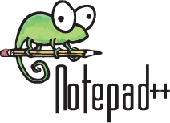

Notepad++
Notepad ++ est un éditeur de texte comme le Bloc-Notes (Notepad de Windows).
Mais Notepad++ sait aussi éditer d’autres fichiers tels que les fichiers html, php, et bien d’autres types de fichiers.
Les 55 langages sont nativement supportés par Notepad++ (coloration syntaxique, indentation, etc.) depuis la version 6.6.6. Pour les autres langages, l'utilisateur dispose de tous les outils pour paramétrer lui-même un comportement de notepad++ propre à un autre langage.